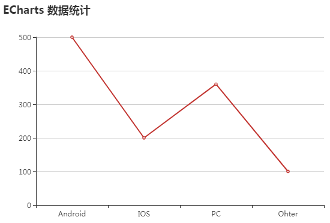
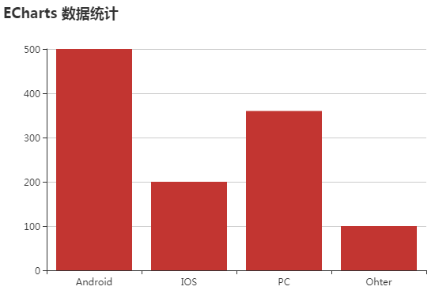
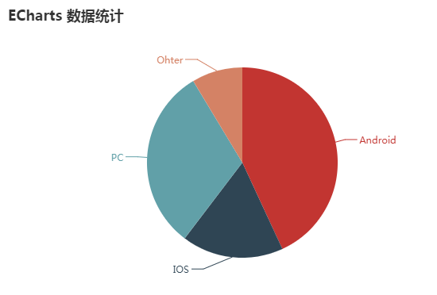

-
1.引入echarts.js
<script type="text/javascript" src="js/echarts.js"></script> echarts.js文件下载地址： http://echarts.baidu.com/
-
2.准备一个放图表的容器
<div id="chartmain" style="width:600px; height: 400px;"></div> -
3.设置参数，初始化图表
<script type="text/javascript"> //指定图标的配置和数据 var option = { title:{ text:'ECharts 数据统计' }, tooltip:{}, legend:{ data:['用户来源'] }, xAxis:{ data:["Android","IOS","PC","Ohter"] }, yAxis:{}, series:[{ name:'访问量', type:'line', //type的值为'line',为折线图；值为'bar',为柱状图 data:[500,200,360,100] }] }; //初始化echarts实例 var myChart = echarts.init(document.getElementById('chartmain')); //使用制定的配置项和数据显示图表 myChart.setOption(option); </script>  折线图效果图 柱状图效果图饼图和折线图、柱状图有一点区别。主要是在参数和数据绑定上。饼图没有X轴和Y轴的坐标，数据绑定上也是采用value 和name对应的形式。
<script type="text/javascript"> //指定图标的配置和数据 var option = { title:{ text:'ECharts 数据统计' }, series:[{ name:'访问量', type:'pie', radius:'60%', data:[ {value:500,name:'Android'}, {value:200,name:'IOS'}, {value:360,name:'PC'}, {value:100,name:'Ohter'} ] }] }; //初始化echarts实例 var myChart = echarts.init(document.getElementById('chartmain')); //使用制定的配置项和数据显示图表 myChart.setOption(option); </script>  饼状图效果图
ECharts.js的入门学习
2017年7月1日
20
0